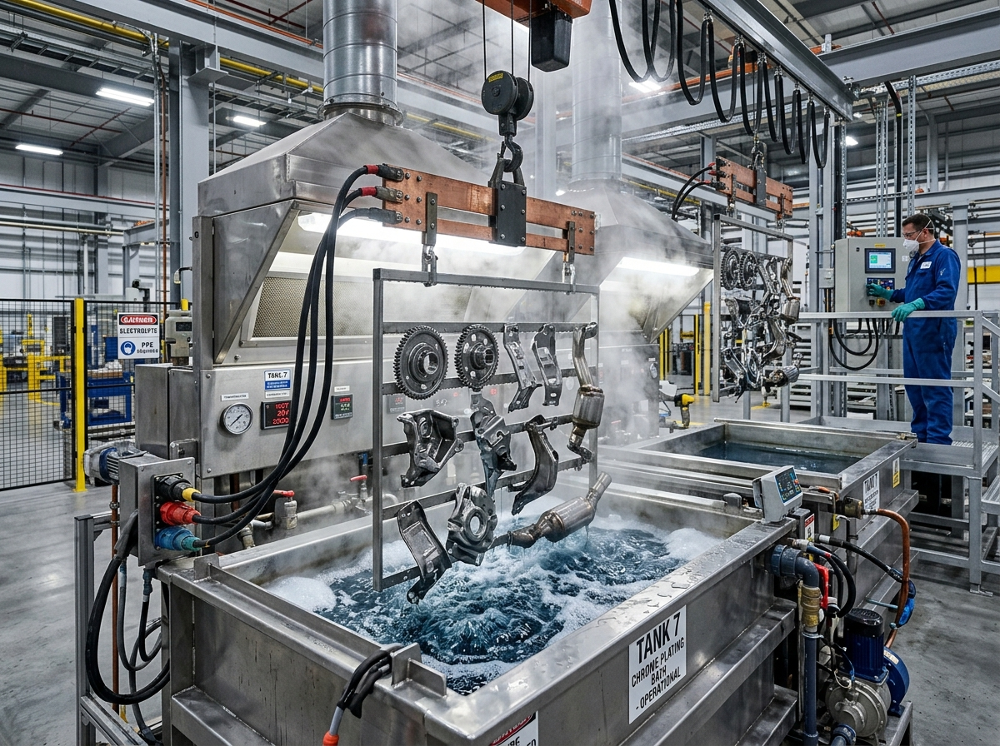

Electroplating
17 Jul 2026
Pengertian Electroplating: Prinsip Kerja & Peran Trafo Rectifier
Pelajari dasar-dasar proses pelapisan logam secara listrik, bagaimana ion logam menempel pada permukaan material, dan mengapa kestabilan trafo rectifier sangat vital untuk ketebalan mikron yang merata.
Baca Selengkapnya